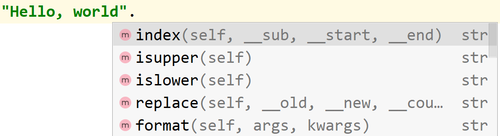

Преображенский М.В. 2021/22
Лекция 3 - встроенные функции типов данных.
На этой лекции мы подробно обсудим встроенные возможности типов данных вообще и конкретно встроенные возможности типа данных str.
Понятия вызываемости и индексируемости.
На прошлой лекции мы поговорили о "сырых" типах данных: int, float, bool и str, а так же об операторах, позволяющих осуществлять простые операции с этими типами.
Сегодня мы обсудим функционал типов данных, выходящий за пределы простых операций. Для этого нам надо будет
поговорить о двух свойствах типов данных: ИНДЕКСИРУЕМОСТЬ и ВЫЗЫВАЕМОСТЬ.
Вызываемые (Callable) - значения, поддерживающие оператор вызова (круглые скобки). Пример: input() <- круглые скобки означают вызов.
Индексируемые (прямой перевод с английского - Подписные (subscriptable)) - типы данных, поддерживающие оператор получения внутреннего элемента (квадратные скобки). Например из строки "Привет" можно достать букву "П", написав "Привет"[0]
Термины Callable и Subscriptable полезно знать, потому что они появляются в отчётах об ошибках.
Попробуйте, например, вызвать такой код:
a = 5
a()
Или такой:
a = 5
print(a[0])
Встроенные возможности типа данных str.
В отличие от типов данных int, bool и float, тип данных str поддерживает индексирование.
Он так же содержит внутри себя значительно большее количество вызываемых методов.
Возможности индексирования строк.
Индексом называется значение, указывающее на расположение элемента в коллекции. Конкретно строки индексируются с помощью чисел таким образом, что число 0 соответствует первому символу строки.
Нулевая индексация - весьма распространённая практика числовой индексации, в которой первый элемент имеет индекс 0, а индекс любого элемента вообще на 1 меньше его номера.
Таким образом, Вы можете получить доступ к любой букве строки по её индексу. Индексы могут быть отрицательными (и тогда будет браться элемент с конца строки). Они так же могу превышать длину строки (и тогда отсчёт пойдёт заново по кругу).
Примеры:
line = "Hello, world"
print(line[0]) # Выведет H
print(line[-3]) # Выведет r
print(line[20]) # Ошибка IndexError: string index out of range
Обычно числовое индексирование так же предполагает возможность получения среза
Срез, - способ получить из коллекции с числовым индексированием новую коллекцию, включающую в себя только нужный набор индексов. Срезы задаются по правилам арифметической последовательности - начало, недостижимая граница, шаг.
Примеры:
line = "Hello, world"
print(line[4:]) # Первые 4 символа ("Hell")
print(line[:-4]) # Все символы до 4го с конца ("Hello, w")
print(line[3:-4]) # Все символы с 4го (индекс 3) до 4го с конца ("lo, w")
print(line[::2]) # Каждый второй символ, начиная с первого ("Hlo ol")
print(line[1::2]) # Каждый второй символ, начиная со 2го (индекс 1, "el,wrd")
print(line[::-1]) # Все символы в обратном порядке ("dlrow ,olleH")
Вызываемые команды в строках.
Все представители класса str содержат вызываемые команды, которые можно увидеть, если в поддерживающем
автозаполнение IDE написать точку после строки:

При работе с IDE без автозаполнения всегда можно обратиться к документации:
- Методы класса str на русском: Здесь
- Методы класса str оригинальная: Здесь
Знать полезно все эти методы, но наиболее важными являются:
- "строка".find("подстрока") - ищет индекс первого вхождения подстроки в строку. Возвращает -1 если не находит.
- "строка".isdigit(), а так же другие начинающиеся с is проверки - проверяют состав строки, возвращаю
truе или false. Например, isdigit() вернёт true если строка состоит из цифр
- "строка".upper() и "строка".lower() - возвращают ту же строку, но только большими (или маленькими) буквами
- "строка".join("другая строка") - вставляет исходную строку между каждыми элементами переданной строки
- "строка".replace("что заменить", "чем") - заменяет все вхождения первого аргумента вторым
- "строка с пробелами".split() - делит строку на части по пробелам, табам, разрывам строки итд.
Ещё несколько встроенных функций.
Кроме методов класса str так же доступны общие методы и операции для последовательностей с числовыми индексами:
- Документация на русском: Здесь
- Оригинальная документация: Здесь
Хотелось бы отдельно выделить следующие:
- Проверка in, которая проверяет наличие подстроки в строке
- Метод len("строка"), возвращающий длину строки
- Метод "строка".count("подстрока"), возвращающий количество вхождений подстроки в строку
Итоги: Пример программы, работающей со строками:
Разберите небольшую программу, которая могла бы проверять правильность ввода номера телефона:
def main(line):
line = ''.join(line.split())
if line[0] == '8':
line = f'+7{line[1:]}'
if (line[0] != '8' and line[:2] != '+7') \
or line[0] == '-' or line[-1] == '-' or line.count('--') > 0\
or line.count(')') != line.count('(') or line.count('(') > 1\
or (line.count(')') > 0 and line.index('(') > line.index(')')):
return 'error'
else:
line = line.replace('-', '').replace(')', '').replace('(', '')
return line if len(line) == 12 else 'error'
if __name__ == "__main__":
print(main(input()))
Попробуйте разобраться, по каким правилам эта программа проверяет телефоны.
Можете ли назвать какие-то входные строки, при которых эта программа даст неправильный результат?
На этом лекция завершена, удачи на семинарах!